Importing a Dataset
Importing Different Data Types
You can import different datasets based on data types. Table 1 describes the data types and their differences.
Table 1 Dataset description
nv12 (YUV420SP format), jpeg, png, jpg, bmp, JPEG, JPG, PNG, and BMP |
||
NOTE:
The supported width/height range of the image is [16, 4096].
Click 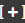 on the right of My Datasets, as shown in Figure 1. The Import Dataset dialog box is displayed, as shown in Figure 2.
Figure 1 Importing a dataset
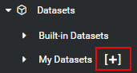
Figure 2 Import Dataset dialog box
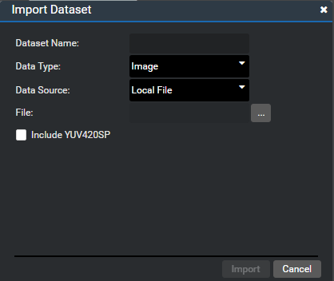
Importing an image dataset
Import a dataset with images in non-YUV420SP formats, as shown in Figure 3.
- Set Data Type to Image.
- Enter the dataset name in the Dataset Name text box.
- Select a value from the Data Source drop-down list box. For details, see Importing from Different Data Sources.
- Click
 next to File to select the images to be imported.
next to File to select the images to be imported. With all the above-mentioned parameters set as shown in Figure 3, the Import button is available. Click Import.
Figure 3 Dialog box for importing an image dataset -1
 NOTE:
NOTE:
If Data Source is set to Local Folder, the selected folder must contain images only.
Import a dataset with images in YUV420SP formats, as shown in Figure 4 and Figure 5.
- Select the Include YUV420SP check box.
Set Width and Height of the images.
NOTE:
The width and height of the dataset must be integers.With all the above-mentioned parameters set, the Import button is available. Click Import.
Figure 4 Dialog box for importing an image dataset -2
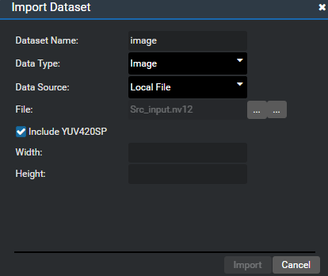Figure 5 Dialog box for importing an image dataset -3
 NOTE:
NOTE:
The values of Width and Height of all YUV420SP images in the same dataset must be the same.
Import a raw dataset, as shown in Figure 6 and Figure 7.
- Set Data Type to Raw.
- Enter the dataset name image in the Dataset Name text box.
- Select Local File from the Data Source drop-down list box. For details, see Importing from Different Data Sources.
Enter the width and height of the dataset.
NOTE:
The width and height of the dataset must be integers.Enter the mean values of the dataset. The value range is [0, 255].
NOTE:
The mean values are floating-point numbers, and a maximum of four decimal places are supported.With all the above-mentioned parameters set, the Import button is available. Click Import.
Figure 6 Dialog box for importing a raw dataset -1

Figure 7 Dialog box for importing a raw dataset -2
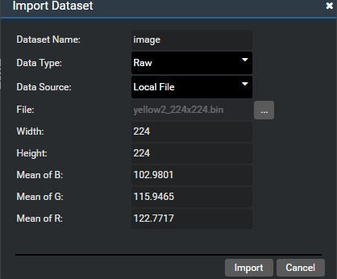 NOTE:
The width, height, and mean values of all files in the same raw dataset must be the same.
Importing an ImageNet dataset
Import an ImageNet dataset with ground truth and label files, as shown in Figure 8.
- Set Data Type to ImageNet.
- Enter the dataset name imagenet in the Dataset Name text box.
- Select Local File from the Data Source drop-down list box. For details, see Importing from Different Data Sources.
- The Use Ground Truth check box is selected by default, which is configurable. Keep this check box selected.
The Use Label check box is selected by default, which is configurable. Keep this check box selected.
NOTE:
A ground truth file is a .csv file, which indicates the number of each image. A label file is a JSON file, which indicates the object corresponding to the number.With all the above-mentioned parameters set, the Import button is available. Click Import.
Figure 8 Dialog box for importing an ImageNet dataset
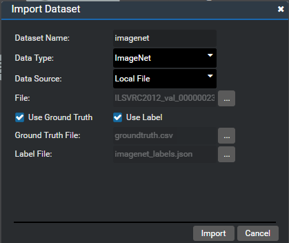 NOTE:
If Data Source is set to Local Folder, the selected folder must contain images only.
Import an ImageNet dataset without ground truth and label files, as shown in Figure 9.
If both Dataset Name and File are set, the Import button is available. Click Import.
Import an ImageNet dataset with a ground truth file, as shown in Figure 10.
Import an ImageNet dataset with a label file, as shown in Figure 11.
- Keep the Use Label check box selected and deselect the Use Ground Truth check box.
- Import the .json label file.
With all the above-mentioned parameters set, the Import button is available. Click Import.
Figure 11 Import Dataset dialog box -3
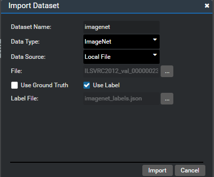 NOTE:
If the Use Ground Truth or Use Label check box is selected, the HiAIAnnotations directory is generated in the dataset directory. The directory stores the annotation files of each image. When the Use Label check box is selected, the label dictionary file HiAI_label.json is generated in this directory, as shown in Figure 12.
Import a COCO dataset, as shown in Figure 13.
- Set Data Type to COCO. Data Source can only be set to Folder.
- Enter the dataset name in the Dataset Name text box, for example, coco.
Click
 next to Folder to select a directory. NOTE:
next to Folder to select a directory. NOTE:
The directory must contain the Annotations and Images directories. The Annotations directory must contain the standard .json files of the instances, and the Images directory must contain jpg images.If both Dataset Name and Folder are set, the Import button is available. Click Import.
Figure 13 Dialog box for importing a COCO dataset
 NOTE:
NOTE:
After successful import, the HiAIAnnotations directory is generated in the dataset directory. The directory stores the annotation file and label file HiAI_label.json of each image, as shown in Figure 14.
Import a PASCAL dataset, as shown in Figure 15.
- Set Data Type to PASCAL. Data Source can only be set to Folder.
- Enter the dataset name pascal in the Dataset Name text box.
Click 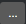 next to Folder to select a directory.
NOTE:
The directory must contain the Annotations and JPEGImages directories. The Annotations directory contains the XML file of each image, and the JPEGImages directory contains .jpg images.If both Dataset Name and Folder are set, the Import button is available. Click Import.
Figure 15 Dialog box for importing a PASCAL dataset
 NOTE:
NOTE:
After successful import, the HiAIAnnotations directory is generated in the dataset directory. The directory stores the annotation file and label file HiAI_label.json of each image, as shown in Figure 16.
Import a Camera dataset, as shown in Figure 17.
- Set Data Type to Camera.
- Enter the name of the Camera dataset in the Dataset Name text box.
- Select a camera channel from the Data Source drop-down list box. The available options are Channel-1 and Channel-2.
- Set FPS to the camera frame rate. Currently, the value range is [1, 20].
- Select an image format from the Image Format drop-down list box. Currently, only YUV420SP is supported.
Select an image size from the Image Size drop-down list box. Currently, only 1280 x 720 is supported.
Figure 17 Dialog box for importing a Camera dataset
 NOTE:
NOTE:
Currently, the Camera dataset supports only the Atlas DK development board scenario.
Import an MIC dataset, as shown in Figure 18.
- Set Data Type to MIC.
- Enter the name of the MIC dataset in the Dataset Name text box.
- Select an MIC channel mode from the Data Source drop-down list box. The available options are MONO and STEREO.
- Set Sample Rate. The available options are as follows: 8K, 11.025K, 12K, 16K, 22.05K, 32K, 44.1K, 48K, 64K, and 96K.
- Set Sample Number/Frame to the number of samples in each frame to be collected. The available options are as follows: 80, 160, 240, 480, 1024, and 2048.
Set Bit Depth of each sample.
Figure 18 Dialog box for importing an MIC dataset
 NOTE:
NOTE: - Currently, the MIC dataset supports only the Atlas DK development board scenario.
- Due to hardware limitations, the interval between each frame must be greater than or equal to 10 ms, which requires: Sample Number/Frame ≥ Sample Rate/100


Importing from Different Data Sources
Import a dataset through a local file, as shown in Figure 19.
Import a dataset through a local folder, as shown in Figure 20.
- Select Local Folder from the Data Source drop-down list box.
Click
 next to Folder to select a folder.
next to Folder to select a folder.Figure 20 Importing a dataset through a local folder
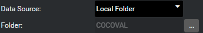 NOTE:
A maximum of 50,000 files are supported. If the number of files in the selected folder exceeds 50,000, the browser may be suspended. A dialog box will be displayed, indicating that the browser does not respond. Click Wait, a folder name may be displayed in the text box.

Follow-up Operations
If the Import Dataset Progress dialog box is displayed during the import, the import is in progress, as shown in Figure 21.
Figure 21 Import Dataset Progress dialog box
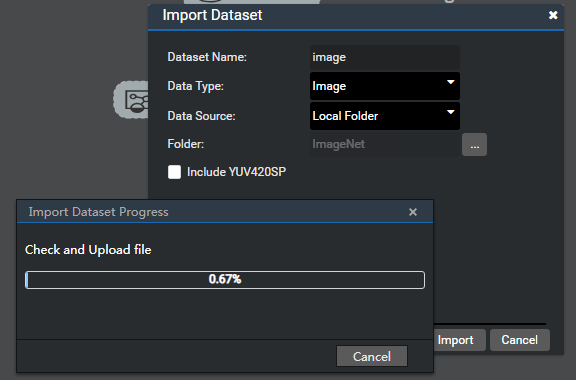
If the dialog box shown in Figure 22 is displayed, it indicates that the import is successful.
Figure 22 Create MyDataset Success
Expand My Datasets on the tool tab page. A new dataset component is added, as shown in Figure 23, indicating that the dataset is successfully imported. You can drag the component to use it.
Figure 23 Dataset successfully imported
Expand the my-datasets directory in the Dataset Explorer, and click  to refresh the directory. The new Dataset Name directory is added to the my-datasets directory, as shown in Figure 24.
to refresh the directory. The new Dataset Name directory is added to the my-datasets directory, as shown in Figure 24.
Figure 24 Viewing the imported dataset in Datasets Explorer
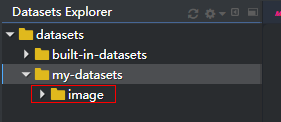